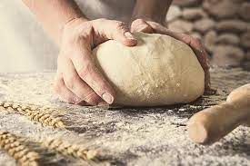

Nuestra Historia
La Rosca es mucho más que una simple panadería. Su historia se remonta a varias décadas atrás, cuando un joven apasionado por la panadería decidió seguir su sueño y abrir un pequeño establecimiento en el corazón del barrio. Con su esfuerzo y dedicación, logró conquistar los paladares de la comunidad local. A lo largo de los años, La Rosca se convirtió en un referente en la industria panadera de la región. Su reputación se basa en la calidad inigualable de sus productos y en la calidez de su servicio al cliente. Generaciones enteras han disfrutado del aroma irresistible que se desprende de su horno y del sabor único de cada pan, pastel y dulce que sale de sus manos expertas. La clave del éxito de La Rosca radica en su enfoque artesanal. Cada producto es elaborado con esmero, utilizando solo los mejores ingredientes y respetando las recetas tradicionales transmitidas de generación en generación. La pasión y el amor por la panadería se reflejan en cada detalle, creando una experiencia gastronómica excepcional. Hoy en día, La Rosca continúa siendo un ícono en la comunidad, pero también ha expandido sus fronteras. Sus productos son apreciados y demandados en toda la región, y su nombre se ha convertido en sinónimo de calidad y autenticidad. A pesar del crecimiento, La Rosca ha mantenido sus raíces humildes y su compromiso con ofrecer productos que deleiten a sus clientes. La historia de La Rosca es una historia de pasión, tradición y dedicación. Cada día, su equipo de panaderos trabaja incansablemente para llevar alegría a los hogares y crear momentos especiales alrededor de la mesa. En cada mordisco, se puede saborear la esencia de la historia y el legado de una panadería que ha dejado una huella imborrable en el corazón de su comunidad.
